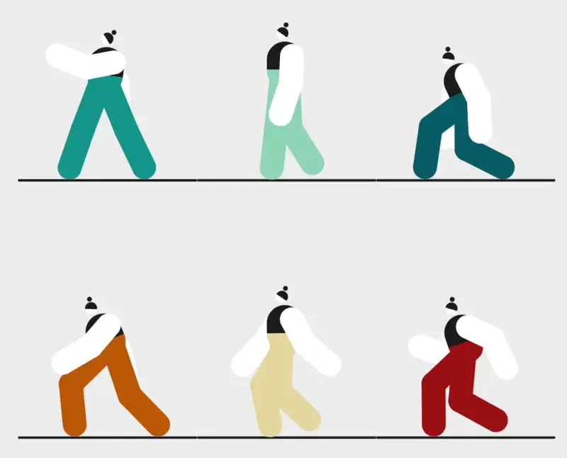
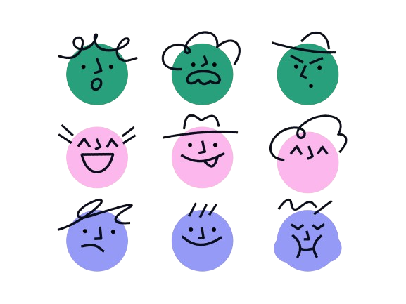
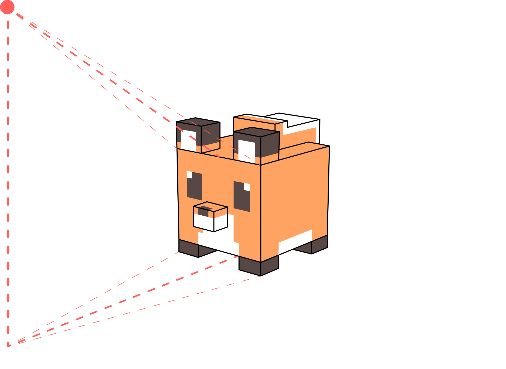
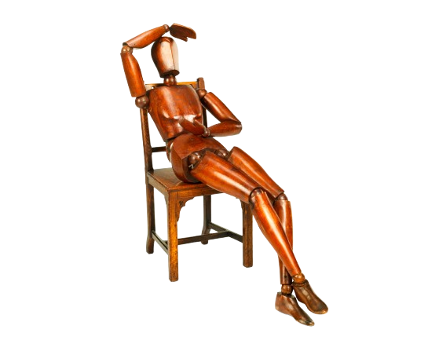
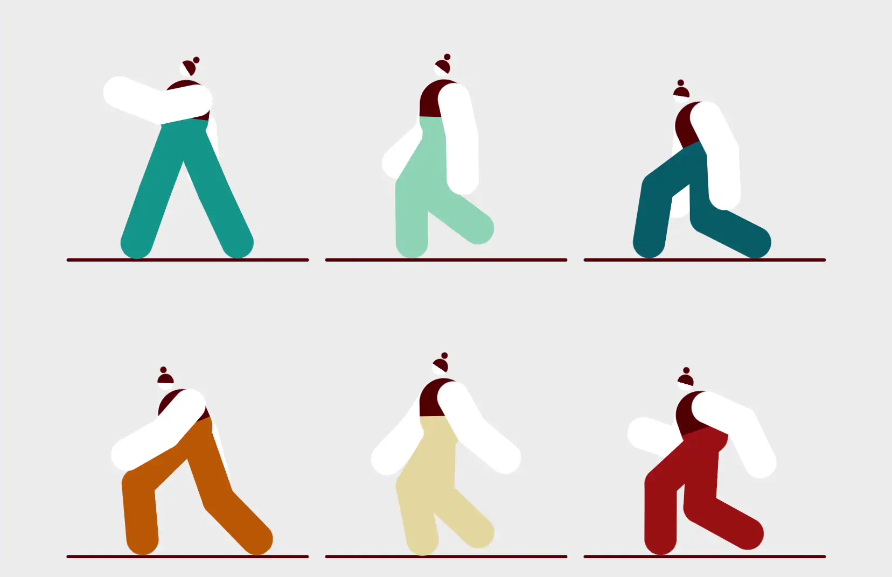
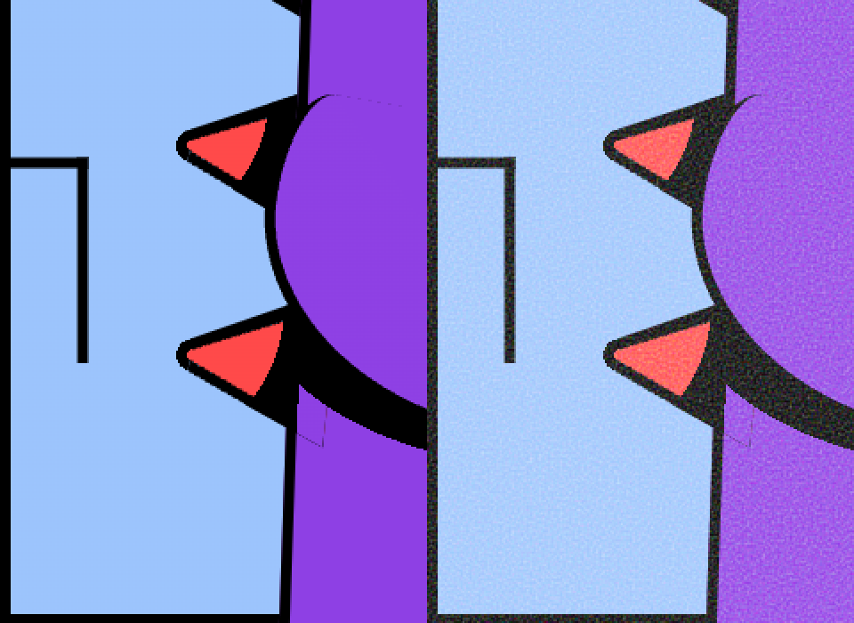

.square {
rotate: y 360deg;
}
body {
perspective: 2000px;
}
.square {
rotate: y 360deg;
}
body {
perspective: 4000px;
}
.square-big {
rotate: y 360deg;
}
.square-small {
rotate: x 360deg;
}
transform-style: flat | preserve-3d;
body {
transform-style: preserve-3d;
}
.square-big {
rotate: y 360deg;
}
.square-small {
rotate: x 360deg;
}
transform: rotate() translate() skew() scale() matrix();
rotate: x 90deg;
translate: 100px 100px 0;
transform: rotateX(90deg) translateX(100px) translateY(100px);transform:
translatex(200px)
rotate(90deg)
translateX(200px)
rotate(90deg)
translateX(200px)
rotate(90deg)
translateX(200px)
rotate(90deg);
.square::before {
rotate: y -90deg;
}
.square::before {
rotate: y -90deg;
}
.square::after {
rotate: y -90deg;
}
.square::before {
rotate: y -90deg;
}
.square::after {
rotate: y -90deg;
}
.square > div {
rotate: x 90deg;
}
.square::before {
rotate: y -90deg;
}
.square::after {
rotate: y -90deg;
}
.square > div {
rotate: x 90deg;
}
.square > div::before {
translate: 0 0 200px;
}
.square::before {
rotate: y -90deg;
}
.square::after {
rotate: y -90deg;
}
.square > div {
rotate: x 90deg;
}
.square > div::before {
translate: 0 0 200px;
}
.square > div::after {
rotate: x -90deg;
}


clip-path: circle() | ellipse() | path() | rect() | xywh() | shape() | polygon();
.shadow {
clip-path:
polygon(x1 y1, x2 y2, ...);
}
.shadow {
clip-path:
polygon(x1 y1, x2 y2, ...);
filter: blur(80px);
}
.shadow {
filter: blur(80px);
}
.shadow::before {
clip-path:
polygon(x1 y1, x2 y2, ...);
}
background-image: linear-gradient();
background-position: x y;
background-size: width height;
background: linear-gradient() x y / width height;

.square {
rotate: 360deg;
transform-origin: center center;
}
.square {
rotate: 90deg;
transform-origin: left top;
}


@keyframes animation-name {
from {
transform: rotateX(0deg);
}
to {
transform: rotateX(180deg);
}
}
@keyframes ro {
00.00% { transform: translate(72em, 35em) translateZ(-32em) rotateX(0deg) rotateZ(0deg); }
09.96% { transform: translate(72em, 35em) translateZ(-32em) rotateX(0deg) rotateZ(0deg); }
10.18% { transform: translate(72em, 32em) translateZ(-32em) rotateX(0deg) rotateZ(0deg); }
11.22% { transform: translate(72em, 16em) translateZ(-16em) rotateX(0deg) rotateZ(0deg); }
11.51% { transform: translate(72em, 12em) translateZ(-16em) rotateX(0deg) rotateZ(0deg); }
13.51% { transform: translate(72em, 12em) translateZ(-16em) rotateX(0deg) rotateZ(0deg); }
13.73% { transform: translate(75em, 12em) translateZ(-15em) rotateX(0deg) rotateZ(0deg); }
14.17% { transform: translate(75em, 21em) translateZ(1em) rotateX(0deg) rotateZ(0deg); }
14.83% { transform: translate(86em, 21em) translateZ(1em) rotateX(0deg) rotateZ(0deg); }
15.50% { transform: translate(70em, 20em) translateZ(16em) rotateX(0deg) rotateZ(0deg); }
18.08% { transform: translate(18em, 19em) translateZ(16em) rotateX(0deg) rotateZ(0deg); }
18.60% { transform: translate(18em, 10em) translateZ(16em) rotateX(0deg) rotateZ(0deg); }
19.19% { transform: translate(18em, 1em) translateZ(23em) rotateX(0deg) rotateZ(0deg); }
19.41% { transform: translate(18em, -3em) translateZ(24em) rotateX(0deg) rotateZ(0deg); }
20.81% { transform: translate(18em, -3em) translateZ(24em) rotateX(0deg) rotateZ(0deg); }
23.76% { transform: translate(80em, -3em) translateZ(24em) rotateX(0deg) rotateZ(0deg); }
25.02% { transform: translate(80em, -27em) translateZ(24em) rotateX(0deg) rotateZ(0deg); }
25.46% { transform: translate(80em, -27em) translateZ(24em) rotateX(0deg) rotateZ(0deg); }
25.83% { transform: translate(80em, -74em) translateZ(24em) rotateX(0deg) rotateZ(0deg); }
26.86% { transform: translate(80em, -74em) translateZ(24em) rotateX(0deg) rotateZ(0deg); }
27.23% { transform: translate(43em, -43em) translateZ(61em) rotateX(0deg) rotateZ(0deg); }
29.52% { transform: translate(92em, -43em) translateZ(61em) rotateX(0deg) rotateZ(0deg); }
31.96% { transform: translate(50em, 50em) translateZ(16em) rotateX(0deg) rotateZ(0deg); }
32.47% { transform: translate(41em, 50em) translateZ(16em) rotateX(0deg) rotateZ(0deg); }
32.84% { transform: translate(41em, 42em) translateZ(16em) rotateX(0deg) rotateZ(0deg); }
37.93% { transform: translate(41em, 42em) translateZ(16em) rotateX(0deg) rotateZ(0deg); }
38.30% { transform: translate(41em, 34em) translateZ(16em) rotateX(0deg) rotateZ(0deg); }
39.48% { transform: translate(17em, 34em) translateZ(16em) rotateX(0deg) rotateZ(0deg); }
40.00% { transform: translate(17em, 34em) translateZ(16em) rotateX(0deg) rotateZ(0deg); }
40.37% { transform: translate(17em, 34em) translateZ(47em) rotateX(0deg) rotateZ(0deg); }
41.48% { transform: translate(17em, 34em) translateZ(47em) rotateX(0deg) rotateZ(0deg); }
41.70% { transform: translate(17em, 34em) translateZ(16em) rotateX(0deg) rotateZ(0deg); }
42.36% { transform: translate(17em, 34em) translateZ(16em) rotateX(0deg) rotateZ(0deg); }
43.62% { transform: translate(17em, 34em) translateZ(31em) rotateX(0deg) rotateZ(0deg); }
44.50% { transform: translate(17em, 34em) translateZ(31em) rotateX(0deg) rotateZ(0deg); }
45.39% { transform: translate(17em, 20em) translateZ(31em) rotateX(0deg) rotateZ(0deg); }
45.83% { transform: translate(17em, 20em) translateZ(31em) rotateX(0deg) rotateZ(0deg); }
46.05% { transform: translate(17em, 20em) translateZ(47em) rotateX(0deg) rotateZ(0deg); }
47.23% { transform: translate(17em, 20em) translateZ(47em) rotateX(0deg) rotateZ(0deg); }
47.60% { transform: translate(17em, 13em) translateZ(47em) rotateX(0deg) rotateZ(0deg); }
48.41% { transform: translate(35em, 13em) translateZ(47em) rotateX(0deg) rotateZ(0deg); }
48.63% { transform: translate(42em, -29em) translateZ(76em) rotateX(0deg) rotateZ(0deg); }
49.08% { transform: translate(42em, -19em) translateZ(76em) rotateX(0deg) rotateZ(0deg); }
49.52% { transform: translate(49em, -19em) translateZ(76em) rotateX(0deg) rotateZ(0deg); }
50.77% { transform: translate(49em, -19em) translateZ(76em) rotateX(0deg) rotateZ(0deg); }
51.51% { transform: translate(33em, -19em) translateZ(76em) rotateX(0deg) rotateZ(0deg); }
51.96% { transform: translate(33em, -12em) translateZ(76em) rotateX(0deg) rotateZ(0deg); }
52.47% { transform: translate(33em, -12em) translateZ(76em) rotateX(0deg) rotateZ(0deg); }
52.77% { transform: translate(33em, 19em) translateZ(76em) rotateX(0deg) rotateZ(0deg); }
53.80% { transform: translate(33em, 19em) translateZ(76em) rotateX(0deg) rotateZ(0deg); }
54.17% { transform: translate(33em, 27em) translateZ(76em) rotateX(0deg) rotateZ(0deg); }
55.13% { transform: translate(56em, 27em) translateZ(76em) rotateX(0deg) rotateZ(0deg); }
56.24% { transform: translate(56em, 27em) translateZ(76em) rotateX(0deg) rotateZ(0deg); }
56.97% { transform: translate(56em, 28em) translateZ(75em) rotateX(0deg) rotateZ(0deg); }
58.23% { transform: translate(56em, 37em) translateZ(69em) rotateX(0deg) rotateZ(0deg); }
58.38% { transform: translate(56em, 38em) translateZ(68em) rotateX(0deg) rotateZ(0deg); }
58.89% { transform: translate(56em, 43em) translateZ(64em) rotateX(0deg) rotateZ(0deg); }
59.48% { transform: translate(56em, 48em) translateZ(58em) rotateX(0deg) rotateZ(0deg); }
59.93% { transform: translate(56em, 53em) translateZ(54em) rotateX(0deg) rotateZ(0deg); }
60.52% { transform: translate(56em, 60em) translateZ(48em) rotateX(0deg) rotateZ(0deg); }
60.96% { transform: translate(56em, 64em) translateZ(42em) rotateX(0deg) rotateZ(0deg); }
61.40% { transform: translate(56em, 68em) translateZ(21em) rotateX(0deg) rotateZ(0deg); }
62.43% { transform: translate(56em, 78em) translateZ(18em) rotateX(0deg) rotateZ(0deg); }
62.66% { transform: translate(56em, 80em) translateZ(18em) rotateX(0deg) rotateZ(0deg); }
63.25% { transform: translate(56em, 76em) translateZ(16em) rotateX(0deg) rotateZ(0deg); }
63.54% { transform: translate(56em, 78em) translateZ(13em) rotateX(0deg) rotateZ(0deg); }
63.84% { transform: translate(53em, 83em) translateZ(10em) rotateX(0deg) rotateZ(0deg); }
64.21% { transform: translate(51em, 85em) translateZ(9em) rotateX(0deg) rotateZ(0deg); }
64.80% { transform: translate(51em, 89em) translateZ(1em) rotateX(0deg) rotateZ(0deg); }
65.02% { transform: translate(50em, 88em) translateZ(-3em) rotateX(0deg) rotateZ(0deg); }
65.61% { transform: translate(48em, 87em) translateZ(-10em) rotateX(0deg) rotateZ(0deg); }
66.20% { transform: translate(47em, 94em) translateZ(-16em) rotateX(0deg) rotateZ(0deg); }
66.72% { transform: translate(53em, 96em) translateZ(-10em) rotateX(0deg) rotateZ(0deg); }
67.31% { transform: translate(55em, 94em) translateZ(-20em) rotateX(0deg) rotateZ(0deg); }
67.75% { transform: translate(55.5em, 94em) translateZ(-23em) rotateX(0deg) rotateZ(0deg); }
68.34% { transform: translate(55em, 96em) translateZ(-28em) rotateX(0deg) rotateZ(0deg); }
68.86% { transform: translate(55em, 98em) translateZ(-31em) rotateX(0deg) rotateZ(0deg); }
69.30% { transform: translate(55em, 99em) translateZ(-32em) rotateX(0deg) rotateZ(0deg); }
70.18% { transform: translate(61em, 114em) translateZ(-41em) rotateX(0deg) rotateZ(0deg); }
71.36% { transform: translate(39em, 134em) translateZ(-57em) rotateX(0deg) rotateZ(0deg); }
72.77% { transform: translate(27em, 171em) translateZ(-60em) rotateX(0deg) rotateZ(0deg); }
78.74% { transform: translate(27em, 171em) translateZ(-60em) rotateX(0deg) rotateZ(0deg); }
79.11% { transform: translate(12em, 195em) translateZ(-44em) rotateX(0deg) rotateZ(0deg); }
79.26% { transform: translate(12em, 195.5em) translateZ(-44em) rotateX(2deg) rotateZ(4deg); }
79.41% { transform: translate(12em, 201em) translateZ(-47em) rotateX(-10deg) rotateZ(14deg); }
79.63% { transform: translate(12em, 206em) translateZ(-51em) rotateX(-24deg) rotateZ(35deg); }
79.70% { transform: translate(12em, 208em) translateZ(-59em) rotateX(-30deg) rotateZ(41deg); }
79.93% { transform: translate(13em, 227em) translateZ(-77em) rotateX(-90deg) rotateZ(90deg); }
81.99% { transform: translate(13em, 234em) translateZ(-77em) rotateX(-90deg) rotateZ(90deg); }
82.29% { transform: translate(13em, 218em) translateZ(-77em) rotateX(-90deg) rotateZ(90deg); }
83.47% { transform: translate(13em, 218em) translateZ(-77em) rotateX(-90deg) rotateZ(90deg); }
84.57% { transform: translate(13em, 218em) translateZ(-106em) rotateX(-90deg) rotateZ(90deg); }
85.24% { transform: translate(40em, 218em) translateZ(-106em) rotateX(-90deg) rotateZ(90deg); }
85.68% { transform: translate(46em, 223em) translateZ(-106em) rotateX(-90deg) rotateZ(90deg); }
85.83% { transform: translate(49em, 223em) translateZ(-106em) rotateX(-90deg) rotateZ(90deg); }
86.79% { transform: translate(49em, 223em) translateZ(-87em) rotateX(-90deg) rotateZ(90deg); }
87.23% { transform: translate(49em, 215em) translateZ(-78em) rotateX(-90deg) rotateZ(90deg); }
87.67% { transform: translate(49em, 215em) translateZ(-67em) rotateX(-90deg) rotateZ(90deg); }
87.97% { transform: translate(49em, 215em) translateZ(-64em) rotateX(-66deg) rotateZ(80deg); }
88.19% { transform: translate(49em, 214em) translateZ(-62em) rotateX(-54deg) rotateZ(70deg); }
88.41% { transform: translate(49em, 211em) translateZ(-58em) rotateX(-43deg) rotateZ(50deg); }
88.63% { transform: translate(49em, 207em) translateZ(-55em) rotateX(-31deg) rotateZ(50deg); }
88.86% { transform: translate(49em, 203em) translateZ(-53em) rotateX(-18deg) rotateZ(27deg); }
89.00% { transform: translate(49em, 201em) translateZ(-53em) rotateX(0deg) rotateZ(0deg); }
91.73% { transform: translate(49em, 146em) translateZ(-52em) rotateX(0deg) rotateZ(0deg); }
92.91% { transform: translate(71em, 146em) translateZ(-52em) rotateX(0deg) rotateZ(0deg); }
93.14% { transform: translate(89em, 154em) translateZ(-43em) rotateX(0deg) rotateZ(0deg); }
93.73% { transform: translate(89em, 154em) translateZ(-43em) rotateX(0deg) rotateZ(0deg); }
94.17% { transform: translate(96em, 154em) translateZ(-43em) rotateX(0deg) rotateZ(0deg); }
95.28% { transform: translate(96em, 154em) translateZ(-43em) rotateX(0deg) rotateZ(0deg); }
95.79% { transform: translate(96em, 163em) translateZ(-43em) rotateX(0deg) rotateZ(0deg); }
100.0% { transform: translate(96em, 163em) translateZ(-43em) rotateX(0deg) rotateZ(0deg); }
}
--animation: 10s linear infinite;
100% / 4 keyframes = 25%
@keyframes walk {
0%, 100% { rotate: 0deg; }
25% { rotate: 60deg; }
50% { rotate: 20deg; }
75% { rotate: 70deg; }
}

clip-path: circle() | ellipse() | path() | rect() | shape() | xywh() | polygon()
mask: image() | url() | gradient()
background: linear-gradient()
clip-path: polygon()
mask: image() | url() | gradient()
background: linear-gradient()
clip-path: polygon()
mask: linear-gradient()
background: linear-gradient()
--skin: #f1eae2;
--hair: #f4e27f;
--clothes: #508d69;
--socks: #ffb6d9;
background: color-mix(in oklch, var(--clothes) 80%, black);
background: color-mix(in oklch, var(--clothes) 80%, white);

.surface {
--noise: url('data:image/svg+xml, #filter');
filter: var(--noise);
}